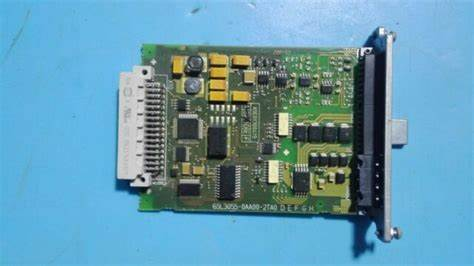

Видеокартата представлява карта за разширение, която позволява на компютъра да изпраща графична информация на видео дисплейно устройство, като например монитор , телевизор или проектор.
Някои други имена на видеокартата включват графична карта , графичен адаптер , адаптер за дисплей , видео адаптер, видеоконтролер.
Видеокартата е част от компютърен хардуер с правоъгълна форма с многобройни контакти в долната част на картата и един или повече порта отстрани за връзка с видео дисплеи и други устройства.

Видеокартата се инсталира в слот за разширение на дънната платка. Докато повечето видеокарти са на PCIe формат, видео карти се предлагат и в други формати, включително PCI и AGP . Тези допълнителни формати са по-стари стандарти и не комуникират с процесора и другите компоненти толкова бързо, колкото PCIe.